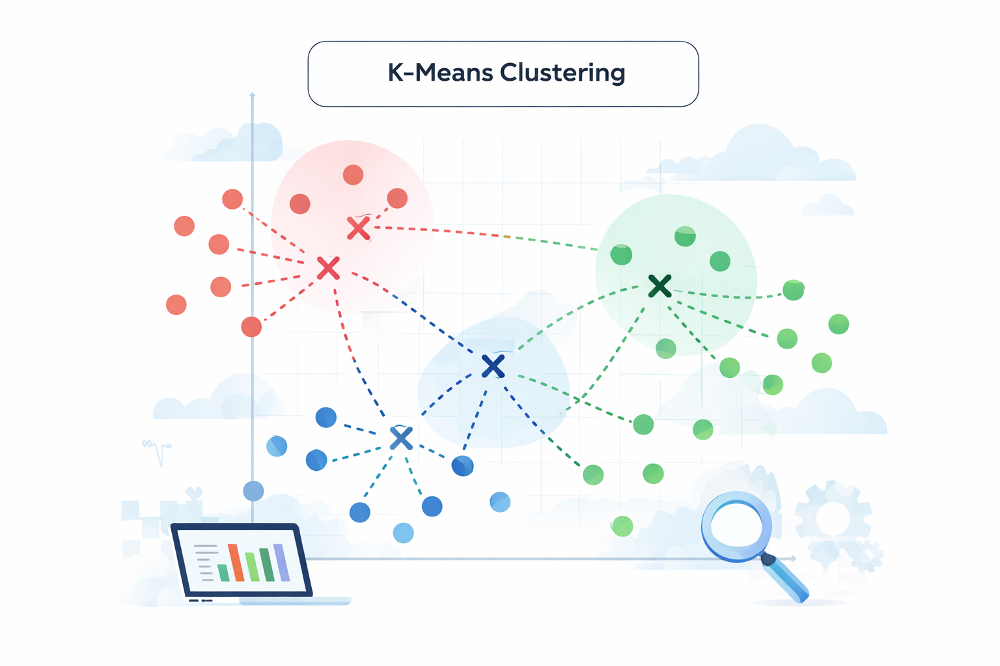
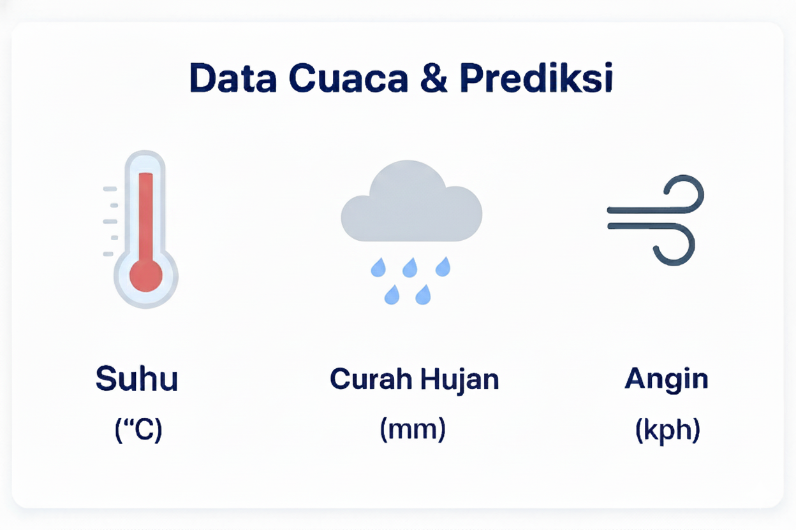
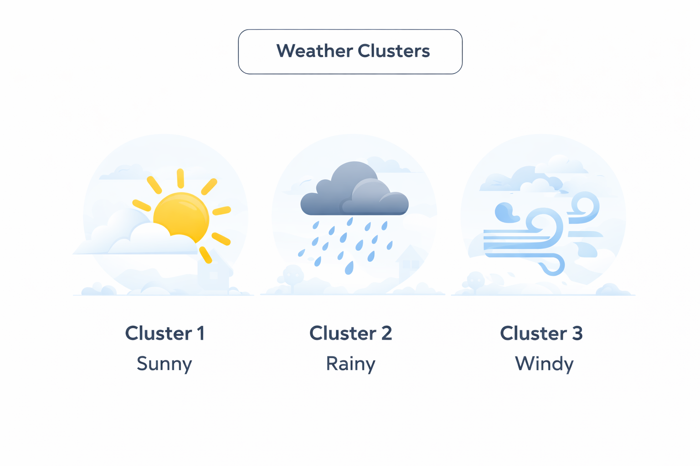

Curah Hujan
Cari kota untuk melihat kondisi cuaca berdasarkan data cuaca saat ini

Aplikasi ini menggunakan algoritma K-Means untuk mengelompokkan data cuaca berdasarkan kemiripan nilai seperti suhu, curah hujan, dan kecepatan angin. Dengan metode ini, sistem dapat mengenali pola cuaca secara otomatis dan mengelompokkannya ke dalam beberapa kategori kondisi.

Aplikasi memanfaatkan data cuaca dari API serta input manual pengguna untuk melakukan proses clustering. Data yang digunakan meliputi suhu, curah hujan, dan kecepatan angin sebagai parameter utama dalam analisis.

Hasil dari K-Means ditampilkan dalam bentuk cluster yang merepresentasikan kondisi cuaca tertentu, seperti cerah, hujan, atau berangin. Setiap cluster membantu pengguna memahami karakteristik cuaca dengan lebih mudah.
Analisis cuaca berbasis clustering
📍 KOTA -
⏰ Update: -
Cluster -
-
Memuat data cuaca...